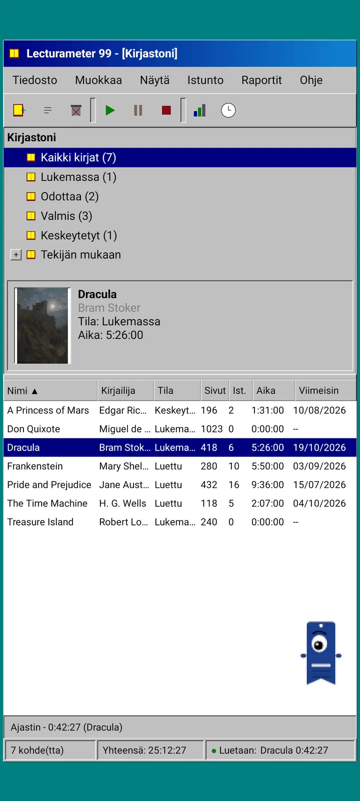
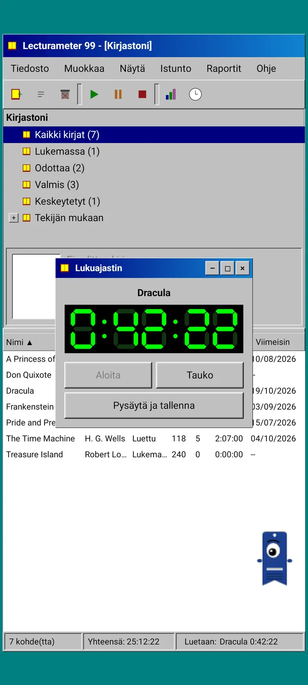
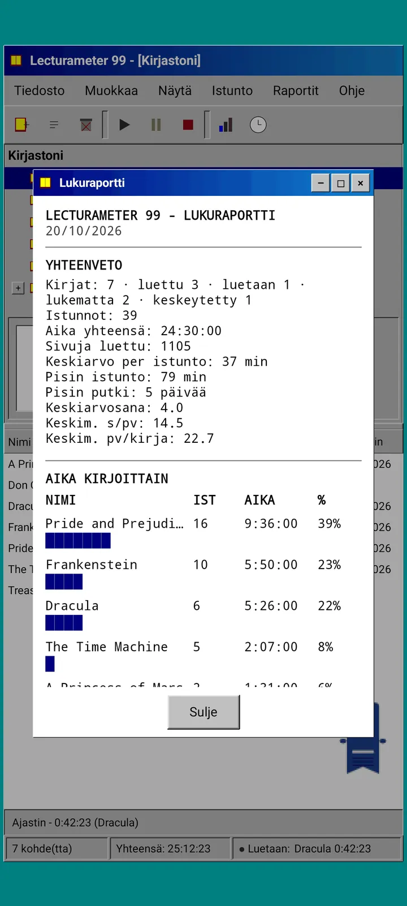
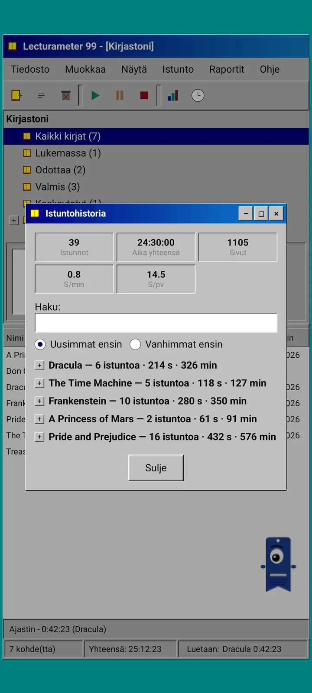
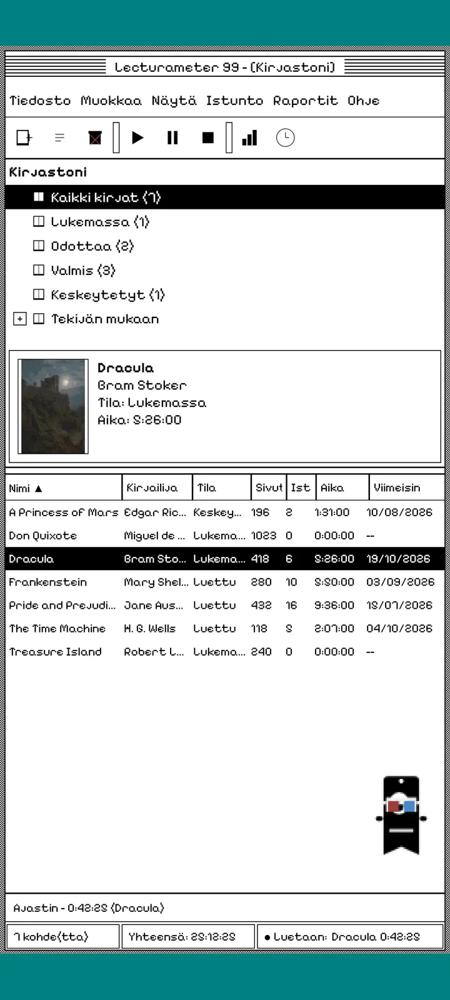
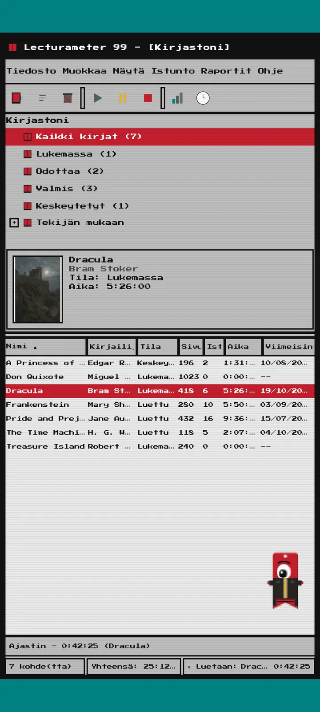
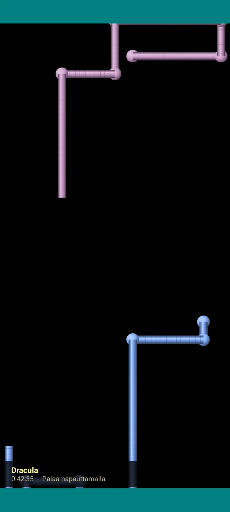

Lecturameter 1999
Lecturameter ikään kuin olisit asentanut sen CD-ROMilta vuonna 1999. Vaihtoehtoinen asiakasohjelma sovellukselle, jossa on ikkunat, valikot ja taulukot ja joka avaa oikeat varmuuskopiosi.

Mikä se on
Ysärin lopun työpöytäohjelma puhelimessasi. Yksi ikkuna sinivihreän työpöydän päällä, valikkorivi, työkalurivi, kansiopuu, tiivis taulukko ja tilarivi.
- Kirjastopuu: kaikki kirjat, luettavana, odottaa, valmis, keskeytetty ja kirjailijoittain
- Taulukko, jossa nimeke, kirjailija, tila, sivut, istunnot, aika ja viimeksi luettu. Lajittele napauttamalla sarakkeen otsikkoa
- Oikea kirjahaku samasta luettelosta, jota Lecturameter käyttää
- Tuo ja vie Lecturameterin varmuuskopion sekä Goodreadsin CSV:n. Tietosi kulkevat sisään ja ulos ilman että mitään katoaa

Miksi se on olemassa
Kokeilu: rakentaa Lecturameterin idea alusta asti täysin erilaisten suunnitteluperiaatteiden pohjalta koskematta oikeaan sovellukseen. Kaikista uudelleentulkinnoista pidin eniten vuoden 1999 versiosta, joten viimeistelin sen hauskana harjoituksena ja tein siitä täydellisen asiakasohjelman. Se on tarkoituksella yksinkertaisempi kuin Lecturameter: se on kokeilu, eikä sitä periaatteessa kehitetä enää eteenpäin.
- Ajastin kelluvassa ikkunassa vihreällä LCD-näytöllä. Sitä voi siirtää, sen voi pienentää tehtäväpalkkiin ja se jatkaa laskemista tilarivillä
- Kun pysäytät ajastimen, istunnon tallennusikkuna kysyy sivusi ja laskee tahtisi, aivan kuten Lecturameter
- Tallennetut istunnot ovat Lecturameter-istuntoja: ne palaavat moderniin sovellukseen, jos viet Lecturameter 1999 -varmuuskopion ja tuot sen Lecturameteriin.

Lukuraportti
Tilastot ovat tulostettu raportti: yhteenveto, aika kirjaa kohden lohkopalkkeina, nopeus sivuina päivässä, merkeistä piirretty vuosikalenteri ja viimeiset seitsemän päivää.

Istuntohistoria
Istunnot ryhmiteltynä kirjoittain puuhun plus- ja miinusmerkein, ylhäällä viisi lukua: istunnot, kokonaisaika, sivut, sivua minuutissa ja sivua päivässä.

Tallenna istunto
Päivämäärä, minuutit, ensimmäinen ja viimeinen sivu, kommentti. Yhteenveto laskee sivut ja tahdin kirjoittaessasi. Jos pääset viimeiselle sivulle, se kysyy, luitko kirjan loppuun.

Pagi 99
Myös Pagi matkustaa vuoteen 1999: pikselöitynä ja vapaana näytöllä kuin sen ajan toimistoavustajat. Voit vetää sitä, se sanoo jotain, kun napautat sitä, ja näyttää vinkkejä keltaisissa kuplissa.
Teemat
Classic 98 on ilmainen ja oletuksena. Paketti tuo kuusi lisää, jokaisella oma taustansa ja omat äänensä.

Valitse se Näytä-valikosta
Näytä, Teema... avaa ikkunan, jossa on seitsemän teemaa. Muutos koskee kerralla kaikkia ikkunoita, ajastinta ja Pagia.
- Classic 98, ilmainen ja oletuksena: harmaat ikkunat, tummansiniset otsikkorivit ja sinivihreä työpöytä
- Teemapaketti: 1984, Gumdrop, Memory, Towers, Core ja 8-bit
- Jokaisella teemalla on oma työpöydän taustansa ja omat äänensä napautuksille, ikkunoille ja ajastimelle
- Näytä, Teeman äänet mykistää äänet, jos luet hiljaisuudessa

Classic 98
Harmaat ikkunat, tummansiniset otsikkorivit ja sinivihreä työpöytä. Ilmainen, ja sovellus aukeaa sillä.

1984
Yksibittinen mustavalkoinen työpöytä pistekuvioineen ja kulmikkaine ikkunoineen.

Gumdrop
Läpikuultavaa värillistä muovia, pyöreitä painikkeita ja raitoja taustalla.

Memory
Ysärin levykonsolin valikot tummansinisinä.

Towers
Toinen ysärin levykonsoli, yönsininen vaaleansinisin viivoin.

Core
Musta-vihreä konsoli, kuin näyttö, joka ei koskaan sammu.

8-bit
Isoja pikseleitä, vähän värejä ja palikkamaisia kirjaimia.

Kokeile ennen kuin maksat
Napauta lukittua teemaa, niin koko sovellus vaihtuu siihen. Jos suljet ostamatta, edellinen teema palaa.
Näytönsäästäjät
Ne näkyvät vain, kun ajastin on käynnissä ja jätät puhelimen rauhaan. Ne odottavat 1, 3 tai 5 minuuttia tai eivät koskaan. Yksi napautus vie takaisin, ja ajastin jatkaa laskemista.

Lentävät kirjat
Pikselikirjat räpyttelevät kansiaan mustan näytön poikki.

Kirjainkenttä
Monien aakkostojen kirjaimia lipuu ohi kuin tähtikenttä.

Sivuputket
Sivuista tehtyjä putkia, jotka piirtyvät, kunnes näyttö täyttyy.

Pomppiva Pagi
Pagi pomppii näytön reunoista.

Lukukello
Istunnon aika isoina LCD-numeroina.

Asuja Pagille
Kahdeksan asua Pagi 99:lle. Valitse ne kohdasta Näytä, Pagin asu..., ja voit sovittaa niitä ennen maksamista.
- Kasettisoitin
- Lippis väärinpäin
- 3D-lasit
- Neonaurinkolasit
- Korppu kädessä
- Nahkatakki
- Taskulemmikki
- Pahvikruunu
Kauppa
Sovellus on ilmainen ja täysin riittävä lukemisen kirjaamiseen. Ostettavat asiat muuttavat vain ulkoasua.
Koko sovellus ilman aikarajaa.
- Kirjasto, haku, ajastin ja istunnot
- Lukuraportti ja istuntohistoria
- Lecturameter-varmuuskopio ja Goodreadsin CSV, sisään ja ulos
- Classic 98 -teema ja Pagi 99
- Ei tiliä eikä mainoksia
Kertamaksuja, ei tilauksia.
- Teemapaketti, 3,49 €: 6 teemaa taustoineen ja äänineen sekä näytönsäästäjät
- Näytönsäästäjät, 1,99 €: kaikki 5 näytönsäästäjää
- Pagin asut, 1,99 €: kaikki 8 asua
- Koko 1999, 4,49 €: teemat, näytönsäästäjät ja asut
Vapaaehtoinen juomaraha Ohje-valikossa, jos haluat tarjota minulle kahvit.
Teemoja ja asuja voi kokeilla livenä ennen maksamista. Jos suljet ostamatta, aiempi valinta palaa.
Mikä muuttuu Lecturameteriin verrattuna
Sama kuin Lecturameterissa
- Samat tiedot: kirjat, istunnot, tilat, arviot ja muistiinpanot. Varmuuskopiotiedosto on sama molemmissa sovelluksissa.
- Kirjahaku nimekkeen tai kirjailijan mukaan.
- Oikea ajastin: se jatkaa laskemista taustalla ja vaikka sulkisit sovelluksen.
- Ei tiliä, ei mainoksia, ei nettiyhteyttä paitsi kirjojen hakuun.
- Samat kielet kuin Lecturameterissa.
Vain 1999-versiossa
- Vuoden 1999 työpöytäkäyttöliittymä. Ei Materialia.
- Oikeat ikkunat: voit vetää, pienentää ja sulkea ne ruksista.
- Lukuraportti tekstinä, kalenteri merkeistä piirrettynä.
- Pikavalikko pitkällä painalluksella ja pikanäppäimet, jos liität näppäimistön.
- Pikselöity Pagi 99 vinkkikuplineen.
- Valinnaiset teemat omine taustoineen ja äänineen, näytönsäästäjät ajastimen käydessä ja asuja Pagille.
Mitä siitä jätettiin tarkoituksella pois
- Ei Prota eikä tilausta. Lukemisen kirjaaminen on kokonaan ilmaista, kauppa myy vain ulkoasuja.
- Ei haasteita, bingoja, vuoden Wrappedia eikä widgetejä.
- Ei uppoutuvaa istuntoa, taustaääniä eikä Google Drive -varmuuskopiota. Varmuuskopio tallennetaan tiedostona.
Suljettu testi
Lecturameter 1999 on suljetussa testauksessa Google Playssa. iOS tulee myöhemmin, päivämäärää ei vielä ole.
- Liity ryhmään groups.google.com/g/lecturameter-1999
- Rekisteröidy testaajaksi osoitteessa play.google.com/apps/testing/com.lecturameter.r1999
- Asenna se osoitteesta Google Play
Suljetussa testauksessa Google Playssa, iOS myöhemmin. Lue blogikirjoitus ja näe, mistä se on peräisin ja mitä odottaa.